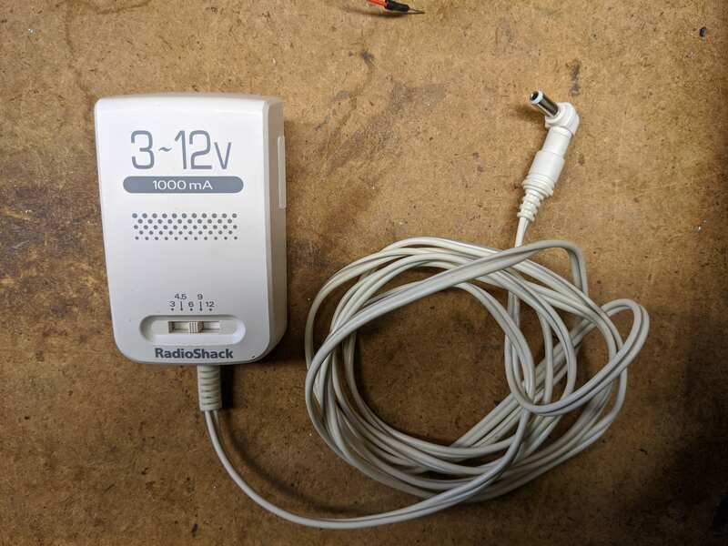
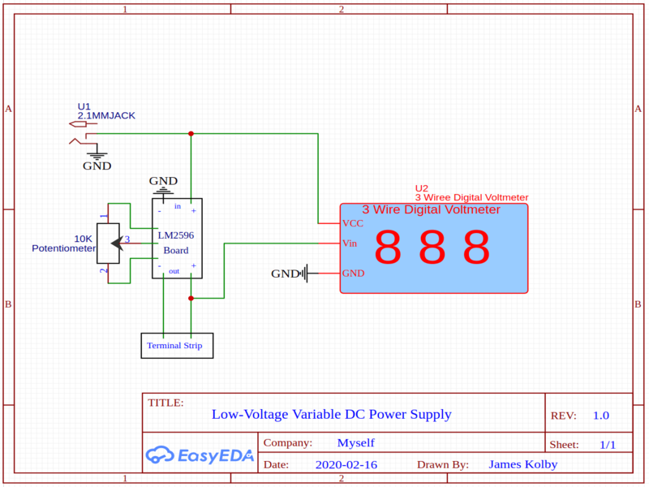

Custom Low-Voltage DC Power Supply

While prototyping another project on a breadboard, I realized, that a dedicated, variable, DC,
supply would make working with the breadboard much easier. I have larger, more powerful, variable, power
supplies, but I wanted the convenience of a small one on my desk.

I used a cardboard box, that I had received items in the mail with (hence the blacking out of
the address). I salvaged the display from a broken power supply, and it is designed to read voltage, so I
did not have to reinvent as much circuitry. You can get a similar display on
Adafruit's website. It has three wires: one for a
positive DC voltage to power the display, one ground, and one to measure any DC voltage relative to the
ground wire.
Inside, the heart of the thing is a LM2596 DC-DC buck converter from ebay. It can step down
any DC voltage (within its rating of course), and can be adjusted via a screw on a variable resistor. I
intended to replace the board's variable resistor with a potentiometer for easier adjustment, but I had
a multiple failures, which I'll discuss later. On the input of the converter, I soldered a barrel jack as
well as the positive and ground DC wires of the display (in parallel). On the output I soldered two wires
to a terminal strip, to which I soldered two, long breadboard jumpers. That's it for electronics inside the
box! Finally, I hot-glued everything down, so as to prevent any shorts.

The barrel jack is for an old, radioshack-brand inverter set to 12 V. During testing I set it
to 6 V, because it was easily able to produce sparks at 12 V with it's 1,000 mA limit.
On the backside of the project-box, I made sure to label, that the barrel jack is center
negative. In retrospect I should have made it center positive for greater safety, but it's done now.
Now, onto what went wrong. The LM2596 converters are very appealing, because they are very
cheap, but the low price point means, that they are rather delicate. I destroyed three of them trying to
remove the built in variable resistor and attach my own potentiometer. With only one converter left on
hand, I decided to leave it be for now and to just use it's somewhat inconvenient, little screw.
What broke every time was the same solder pad disintegrated. I adjusted my iron to its lowest usable
setting, and I still made a mess of it. I used flux and a medium temperature setting to work quickly, and
it burnt up.
Frustrated and fatigued, I saved one of the boards by soldering the variable resistor back on
upside down, however the connections are very poor, and I do not intend to improve them due to the
old axiom "don't fix what's not broken," and this ugly, little thing can regulate voltage.

I'll update this page, if I ever get the potentiometer soldered on, but for now I'll conclude
by giving you the schematic of how it should be.